Componente Galeria CML Miró
La galería CML Miró toma su nombre el artista Joan Miró (1893-1983), en
donde los diferentes elementos de CML son representados por iconos que
recuerdan las obras, formas y colores utilizados por el artista.
El componente ofrece iconos para la identificación de los diferentes
comandos del entorno, métricas, elementos de compilación y depuración
necesarios en cada uno de los elemenos de CML.
El objetivo del componentes es generar un entorno agradable de uso para
la herramienta, ofreciendo iconos distintivos y vistozos, que apoyen la
creatividad en los procesos de diseño y desarrollo de software.
Estos son algunos de los iconos que se pueden encontrar en la Galería
CML Miró.
 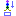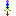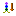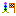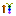
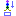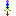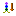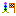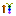 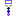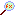
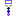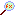